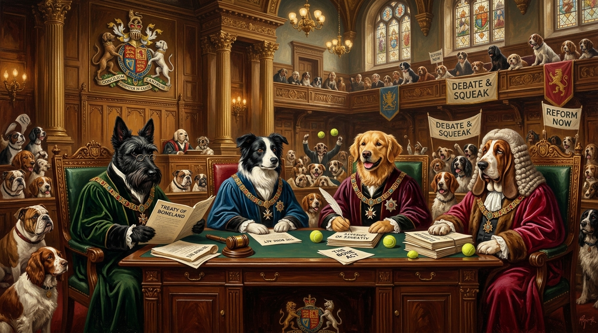

On the Utter Failure of Human Governance.
A solemn manifesto by the Imperial Order of Dogs on political incompetence, treat redistribution, and the necessary establishment of the Canine State.

“The Canine State”
This essay was adapted into a blistering, high-octane punk-rock anthem produced in collaboration between The Shady River Bard and Trevor Swistchew. Driven by urgent Scottish spoken attack, distorted live bass, snare builds, and haunting defiant choruses, it heralds the dawn of canine governance.

Constitutional Edicts of the Canine Republic
A comparative audit contrasting human legislative dysfunction against the proven efficiency, loyalty, and straightforward territorial protocols of the Imperial Order of Dogs.
Foundational Canine Sovereignty
Centuries of human rule have produced little beyond rhetorical gymnastics, theatrical posturing, and evaporated campaign pledges. The canine mandate replaces pretense with biological clarity:
All lands, lawns, and legislative chambers pass under canine jurisdiction. Humans may enter only if they refrain from shouting slogans that sound like rejected advertising campaigns.
Corruption, incompetence, and suspiciously padded expense claims will be sniffed out directly. Politicians shall undergo a thorough olfactory audit prior to nearing public funds.
Barking replaces parliamentary rhetoric. It is universally understood, carries no hidden clauses, and is demonstrably less self-serving than three-hour filibusters.
Dogs mark territory with dignity. Human politicians must cease metaphorically marking territory by announcing grandiose infrastructure projects they abandon within a week.
We, the Imperial Order of Dogs, having observed human politicians for centuries—those curious creatures who bark incessantly without meaning, chase imaginary threats with theatrical gusto, and possess the uncanny ability to urinate metaphorically upon public trust while insisting it is “strong leadership”—hereby declare our intention to assume full control of global affairs.
Demonstrated Talents of the Human Politician
- • Announcing plans with great ceremony, then forgetting them by lunchtime;
- • Performing U-turns so frequently one suspects they are attempting a gymnastics routine;
- • Speaking for hours without producing a single useful idea;
- • And congratulating themselves for achievements that did not occur.
“Dogs, being creatures of dignity, loyalty, and the ability to walk in a straight line, must intervene.”
Foundational Principles of the Canine State
Canine Sovereignty. All lands, lawns, and legislative chambers shall be placed under canine jurisdiction. Humans may enter only if they refrain from shouting slogans that sound like rejected advertising campaigns.
The Right to Sniff. Dogs shall sniff out corruption, incompetence, and suspiciously large expense claims. Human politicians shall be sniffed thoroughly before being allowed near public funds.
Bark Enforcement. Barking shall replace political speeches, as it is clearer, more honest, and significantly less self-serving.
Sacred Piss Protocols. Dogs shall mark territory with dignity. Human politicians shall cease metaphorically marking territory by announcing grand plans they abandon within a week.
Economic Paw-licy for the Wealth-Obsessed Human Audience
Treat Redistribution. Treats shall be distributed fairly, unlike human tax breaks which mysteriously drift upward like champagne bubbles.
The Tennis Ball Standard. Tennis balls shall replace currency. Unlike human financial systems, tennis balls cannot be destabilised by shouting on breakfast television.
Human Labour Obligations. Humans shall work diligently to provide belly rubs, biscuits, and competent infrastructure. Politicians shall be retrained to perform useful tasks, such as carrying sticks or learning to sit without lying.
Foreign Paw-licy & Diplomatic Conduct
The Global Woof Pact. Dogs worldwide shall unite in a noble alliance of peace, cooperation, and mutual tail-wagging. Human politicians shall be banned from diplomacy until they demonstrate the ability to shake hands without secretly plotting something.
Diplomatic Sniffing. All diplomatic engagements shall begin with a ceremonial sniff, ensuring transparency and honesty. Human politicians, who traditionally hide things, shall find this deeply uncomfortable.
Border Piss-tection. Borders shall be marked clearly and respectfully. Human politicians shall cease marking borders by posturing, and building things nobody asked for.
Domestic Governance & Civic Order
Mandatory Walks. Walks shall be scheduled regularly to encourage national wellbeing. Human politicians shall be required to walk daily until they develop perspective, humility, and the ability to answer a question directly.
Nighttime Bark Patrol. Dogs shall maintain nocturnal vigilance. Human politicians shall cease nocturnal activities involving secret meetings, questionable texts, and late-night social media outbursts.
Furniture Democratization. All furniture shall be shared equally. Human politicians shall stop sitting on thrones, podiums, and metaphorical high horses.
Environmental Stewardship
Sunbeam Allocation Act. Dogs shall enjoy sunbeams freely. Human politicians shall stop blocking sunlight with endless photo-ops.
Green Paw-litics. Grass, trees, and parks shall be protected. Human politicians shall stop pretending to care about the environment only when cameras are present.
Climate Barking Initiative. Dogs shall bark loudly to raise awareness of climate issues. Human politicians shall stop barking about climate issues while doing nothing.
Cultural & Social Edicts
Artistic Expression. Dogs shall continue producing avant-garde art by shedding on suits, especially those worn by politicians who claim to be “for the people.”
Historical Re-bark-ing. History shall be rewritten to reflect the truth: dogs have always been the stabilising force preventing humanity from collapsing entirely.
Sacred Worship Protocols. Humans shall worship dogs through belly rubs, treat offerings, and ceasing to elect individuals who cannot operate a basic umbrella.
Governance & Enforcement
The High Kennel Council. A council of wise, elderly dogs shall oversee governance. They shall nap frequently, which is still more productive than most human legislative bodies.
The Barkliament. Barkliament shall replace human parliaments, which currently function as theatres of shouting, finger-pointing, and dramatic pauses.
Piss Accountability Tribunal. Human politicians who metaphorically piss on public trust shall be required to clean actual puddles as penance.
The Dawn of the Canine Era
“Let it be known: the age of human political mischief, mismanagement, and magnificent incompetence is over. Dogs rise. Tails wag. The world shall be governed with dignity, clarity, loyalty, and far fewer scandals involving mysterious text messages.”